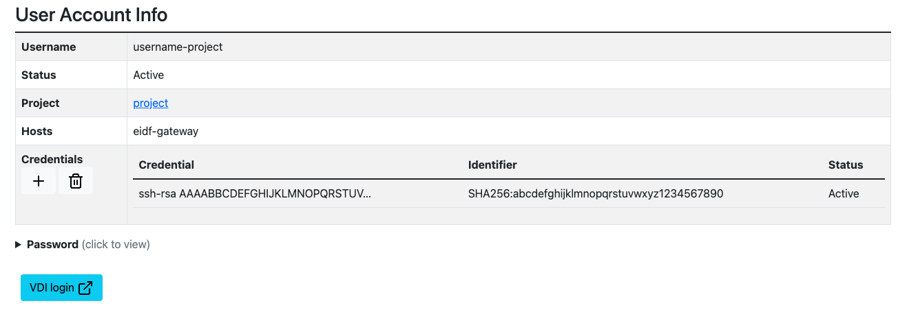

SSH Access to Virtual Machines using the EIDF-Gateway Jump Host
The EIDF-Gateway is an SSH gateway suitable for accessing EIDF Services via a console or terminal. As the gateway cannot be 'landed' on, a user can only pass through it and so the destination (the VM IP) has to be known for the service to work. Users connect to their VM through the jump host using their given accounts.
Generating and Adding an SSH Key
In order to make use of the EIDF-Gateway, your EIDF account needs an SSH-Key associated with it. If you added one while creating your EIDF account, you can skip this step.
Check for an existing SSH Key
To check if you have an SSH Key associated with your account:
- Login to the Portal
- Select 'Your Projects'
- Select your project name
- Select your username
If there is an entry under 'Credentials', then you're all setup. If not, you'll need to generate an SSH-Key, to do this:
Generate a new SSH Key
- Open a new window of whatever terminal you will use to SSH to EIDF.
- Generate a new SSH Key:
ssh-keygen
- It is fine to accept the default name and path for the key unless you manage a number of keys.
- Press enter to finish generating the key
Adding the new SSH Key to your account via the Portal
- Login into the Portal
- Select 'Your Projects'
- Select the relevant project
- Select your username
- Select the plus button under 'Credentials'
- Select 'Choose File' to upload the PUBLIC (.pub) ssh key generated in the last step, or open the
.pub file you just created and copy its contents into the text box. - Click 'Upload Credential' - it should look something like this: 
Adding a new SSH Key via SAFE
This should not be necessary for most users, so only follow this process if you have an issue or have been told to by the EPCC Helpdesk. If you need to add an SSH Key directly to SAFE, you can follow this guide. However, select your '[username]@EIDF' login account, not 'Archer2' as specified in that guide.
Using the SSH-Key to access EIDF - Windows and Linux
- From your local terminal, import the SSH Key you generated above:
$ ssh-add [sshkey] - This should return "Identity added [Path to SSH Key]" if successful. You can then follow the steps below to access your VM.
Accessing From MacOS/Linux
Warning
If this is your first time connecting to EIDF using a new account, you have to set a password as described in Set or change the password for a user account.
OpenSSH is installed on Linux and MacOS usually by default, so you can access the gateway natively from the terminal.
Ensure you have created and added an ssh key as specified in the 'Generating and Adding an SSH Key' section above, then run the command below.
ssh -J [username]@eidf-gateway.epcc.ed.ac.uk [username]@[vm_ip]
The -J flag is use to specify that we will access the second specified host by jumping through the first specified host.
Accessing from Windows
Windows will require the installation of OpenSSH-Server to use SSH. Putty or MobaXTerm can also be used but won’t be covered in this tutorial.
Installing and using OpenSSH
- Click the ‘Start’ button at the bottom of the screen
- Click the ‘Settings’ cog icon
- Search in the top bar ‘Add or Remove Programs’ and select the entry
- Select the ‘Optional Features’ blue text link
- If ‘OpenSSH Client’ is not under ‘Installed Features’, click the ‘Add a Feature’ button
- Search ‘OpenSSH Client’
- Select the check box next to ‘OpenSSH Client’ and click ‘Install’
Accessing EIDF via a Terminal
Warning
If this is your first time connecting to EIDF using a new account, you have to set a password as described in Set or change the password for a user account.
- Open either Powershell (the Windows Terminal) or a WSL Linux Terminal
- Import the SSH Key you generated above:
$ ssh-add [/path/to/sshkey] - This should return "Identity added [Path to SSH Key]" if successful.
- Login by jumping through the gateway.
ssh -J [username]@eidf-gateway.epcc.ed.ac.uk [username]@[vm_ip]
First Password Setting and Password Resets
Before logging in for the first time you have to reset the password using the web form in the EIDF Portal following the instructions in Set or change the password for a user account.